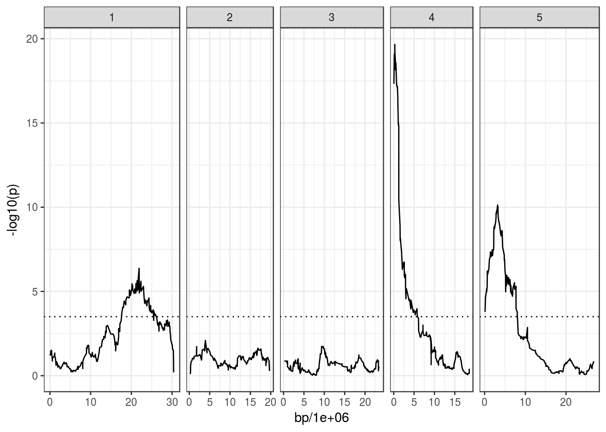

This vignette shows an example of how to retrieve gene lists around QTL of interest. It’s still in progress and simply has some ideas of how this might be done.
At the moment there’s no method implemented in MagicHelpR to define what a QTL peak is (or its confidence interval). In the original MAGIC paper they have a method to define confidence intervals for the QTL, but I could not get my head around it yet.
More naively, one could define a QTL peak as a region within a certain Kb distance from the top SNP. This is the starting point in this vignette (perhaps in the future this will be improved).
I use the same data shown in the introduction vignette.
I will use flowering time as an example.
The code to reproduce the analysis shown in that vignette is here for convenience:
library(MagicHelpR)## Loading required package: dplyr##
## Attaching package: 'dplyr'## The following objects are masked from 'package:stats':
##
## filter, lag## The following objects are masked from 'package:base':
##
## intersect, setdiff, setequal, union## Loading required package: tidyr# Download genotype and phenotype example data
#downloadArabMagic('~/temp/magic_intro/', tidy = TRUE, example_data = TRUE)
# Read phenotype data
pheno <- read.table('~/temp/magic_intro/magic_phenotype_example.txt', header = T)
# Create the MagicGenPhen object containing genotypes and phenotype
magic_phen <- magicFounderReconstruct(snp_dir = "~/temp/magic_intro/",
phenotypes = pheno, id = "SUBJECT.NAME")## mindist: 1e-05
## datafile /home/hugo/temp/magic_intro//all_chr.MAGIC.happy.data allelesfile /home/hugo/temp/magic_intro//all_chr.MAGIC.happy.alleles gen 7
## genotype phase: unknown
## Reading phenotype and genotype data from ped file /home/hugo/temp/magic_intro//all_chr.MAGIC.happy.data
## Number of individuals: 703
## Number of markers: 1259
## Number of strains: 19
## Use Parents: no
## Number of subjects with two parents: 0
## Number of parents in nuclear families: 0
## null model mean nan var nan
## assuming haploid(inbred) genotypes
## datafile /home/hugo/temp/magic_intro//all_chr.MAGIC.happy.data allelesfile /home/hugo/temp/magic_intro//all_chr.MAGIC.happy.alleles gen 7# QTL scan for days.to.bolt trait
bolt_qtl <- scanQtl(magic_phen, "days.to.bolt")## F-test comparing the models:
## H1: days.to.bolt ~ GEN
## H0: days.to.bolt ~ 1## Elapsed time: 31 secondsThis is our QTL plot:
# Load the library and change the default theme
library(ggplot2); theme_set(theme_bw())
# Make the plot, with an horizontal line at 3.5, which is suggested in Kover et al. (2009)
ggplot(bolt_qtl, aes(bp/1e6, -log10(p))) +
geom_line() +
facet_grid(~ chromosome, scales = "free_x", space = "free_x") +
geom_hline(yintercept = 3.5, linetype = "dotted")## Warning: Removed 2 rows containing missing values (geom_path).
Let’s say we were interested in which genes are around the peak on Chr4.
# Filter the data to retain only the peak marker on Chromosome 4
chr4_peak <- bolt_qtl %>%
filter(chromosome == 4) %>%
arrange(p) %>%
slice(1) %>%
select(marker, bp, chromosome)
chr4_peak## # A tibble: 1 x 3
## marker bp chromosome
## <I(chr)> <dbl> <I(chr)>
## 1 FRI_2343 270862 4As I said above, at the moment I don’t know what the best way is to define where a peak starts and ends.
However, as a starting point, let’s consider all genes within 50Kb of the top SNP on Chr4.
# Add positions for window start and end
chr4_peak <- chr4_peak %>%
mutate(window_start = bp - 50e3,
window_end = bp + 50e3)
chr4_peak## # A tibble: 1 x 5
## marker bp chromosome window_start window_end
## <I(chr)> <dbl> <I(chr)> <dbl> <dbl>
## 1 FRI_2343 270862 4 220862 320862I will use the package biomaRt to retrieve gene information from BioMart.
library("biomaRt")
# List of BioMart plant databases
listMarts(host="plants.ensembl.org")## biomart version
## 1 plants_mart Ensembl Plants Genes 38
## 2 plants_variations Ensembl Plants Variations 38# Specify the plants_mart
m <- useMart("plants_mart", host="plants.ensembl.org")
# Check the Arabidopsis dataset name
listDatasets(m) %>% filter(grepl("Arabidopsis", description))## dataset description version
## 1 athaliana_eg_gene Arabidopsis thaliana genes (TAIR10) TAIR10
## 2 alyrata_eg_gene Arabidopsis lyrata genes (v.1.0) v.1.0# Define dataset
m <- useMart("plants_mart", host="plants.ensembl.org", dataset="athaliana_eg_gene")The function getBM can then be used to retrieve genes from the BioMart database.
# Download gene list with certain attributes
## attribute list can be obtained with listAttributes(m)
biomart_genes <- getBM(attributes=c("tair_locus", "tair_symbol", "external_gene_name",
"chromosome_name", "start_position", "end_position",
"description"),
mart=m) %>%
filter(tair_locus != "") # some attributes have no "tair_locus" ID!
head(biomart_genes)## tair_locus tair_symbol external_gene_name chromosome_name start_position
## 1 AT5G16970 AT-AER AER 5 5575973
## 2 AT4G32100 4 15511757
## 3 AT2G43120 2 17927181
## 4 AT1G30814 1 10942648
## 5 AT3G18710 PUB29 PUB29 3 6434082
## 6 AT4G25880 APUM6 APUM6 4 13154708
## end_position
## 1 5578086
## 2 15512218
## 3 17929138
## 4 10944727
## 5 6436046
## 6 13159382
## description
## 1 NADPH-dependent oxidoreductase 2-alkenal reductase [Source:UniProtKB/Swiss-Prot;Acc:Q39172]
## 2 Beta-1,3-N-Acetylglucosaminyltransferase family protein [Source:UniProtKB/TrEMBL;Acc:F4JTI5]
## 3 RmlC-like cupins superfamily protein [Source:TAIR;Acc:AT2G43120]
## 4 unknown protein; Has 35333 Blast hits to 34131 proteins in 2444 species: Archae - 798; Bacteria - 22429; Metazoa - 974; Fungi - 991; Plants - 531; Viruses - 0; Other Eukaryotes - 9610 (source: NCBI BLink). [Source:TAIR;Acc:AT1G30814]
## 5 RING-type E3 ubiquitin transferase [Source:UniProtKB/TrEMBL;Acc:A0A178VJJ8]
## 6 pumilio 6 [Source:TAIR;Acc:AT4G25880]This table should contain all Arabidopsis genes from BioMart.
We can then filter it based on our peak QTL:
chr4_genes <- biomart_genes %>%
filter(chromosome_name == chr4_peak$chromosome &
start_position > chr4_peak$window_start &
end_position < chr4_peak$window_end)There’s now 29 in this list. We can further arrange them by their closeness to our top SNP:
# Get the middle position of each gene and get how far it is from the top SNP
# arrange by distance and get the first few rows of the table
chr4_genes %>%
mutate(mid_position = round((start_position + end_position)/2),
dist_snp = abs(mid_position - chr4_peak$bp)) %>%
arrange(dist_snp) %>%
head()## tair_locus tair_symbol external_gene_name chromosome_name start_position
## 1 AT4G00650 FRI FRI 4 268901
## 2 AT4G00651 4 271487
## 3 AT4G00660 RH8 RH8 4 274252
## 4 AT4G00630 KEA2 KEA2 4 261246
## 5 AT4G00670 4 278316
## 6 AT4G00680 ADF8 ADF8 4 279596
## end_position
## 1 271503
## 2 271879
## 3 278737
## 4 268097
## 5 279197
## 6 281072
## description
## 1 Inactive protein FRIGIDA [Source:UniProtKB/Swiss-Prot;Acc:Q67Z93]
## 2 FUNCTIONS IN: molecular_function unknown; INVOLVED IN: biological_process unknown; LOCATED IN: endomembrane system; BEST Arabidopsis thaliana protein match is: Fe superoxide dismutase 2 (TAIR:AT5G51100.1); Has 34 Blast hits to 34 proteins in 11 spec /.../rchae - 0; Bacteria - 0; Metazoa - 0; Fungi - 0; Plants - 34; Viruses - 0; Other Eukaryotes - 0 (source: NCBI BLink). [Source:TAIR;Acc:AT4G00651]
## 3 DEAD-box ATP-dependent RNA helicase 8 [Source:UniProtKB/Swiss-Prot;Acc:Q8RXK6]
## 4 K+ efflux antiporter 2 [Source:UniProtKB/TrEMBL;Acc:F4JHE9]
## 5 At4g00670 [Source:UniProtKB/TrEMBL;Acc:Q6IDB4]
## 6 actin depolymerizing factor 8 [Source:TAIR;Acc:AT4G00680]
## mid_position dist_snp
## 1 270202 660
## 2 271683 821
## 3 276494 5632
## 4 264672 6190
## 5 278756 7894
## 6 280334 9472In this case, the gene FRI is the closest to our top SNP, and it is likely to be a good candidate (as it is involved in flowering).